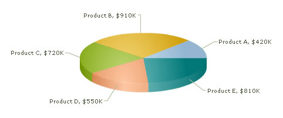

| XML/JSON Attributes for Smart Labels & Lines | |||||||||||||||
|
Smart labels are the labels for the pie/doughnut chart. The smart labels manage overlapping of labels even when a large number of labels are placed in close vicinity. |
|||||||||||||||
|  | |||||||||||||||
You can disable the smart labels (if required to save chart space or when there are few pie segments) using enableSmartLabels='0'. When the smart labels are switched off, the pie labels will be displayed without the smart label lines. But if the number of labels increases and smart labels are not being used, then the labels might overlap. |
|||||||||||||||
<chart enableSmartLabels='0'...> |
|||||||||||||||
| Customizing the smart labels | |||||||||||||||
The smart labels can be customized using the following attributes: |
|||||||||||||||
|
|||||||||||||||
<chart smartLineThickness='2' smartLineColor='333333' isSmartLineSlanted='0'...> |
|||||||||||||||
| Label Clearance | |||||||||||||||
You can set the label distance and clearance using the following attributes: |
|||||||||||||||
|
|||||||||||||||
| Skipping Overlap labels | |||||||||||||||
When you have too many labels in your pie chart (which is difficult to adjust even using smart labels), the labels might overlap. In that case, you have the option to skip the overlapping labels using skipOverlapLabels='1'. The labels of the least significant pies will be removed. |
|||||||||||||||
| Displaying values | |||||||||||||||
You can set whether you want the actual value of the pie segment to be displayed in the label or the percentage value. By default, the actual values are displayed ($550K, $720K in the chart shown above). When you want to display their percentages, use showPercentValues='1'. |
|||||||||||||||
<chart showPercentValues='1'...> |